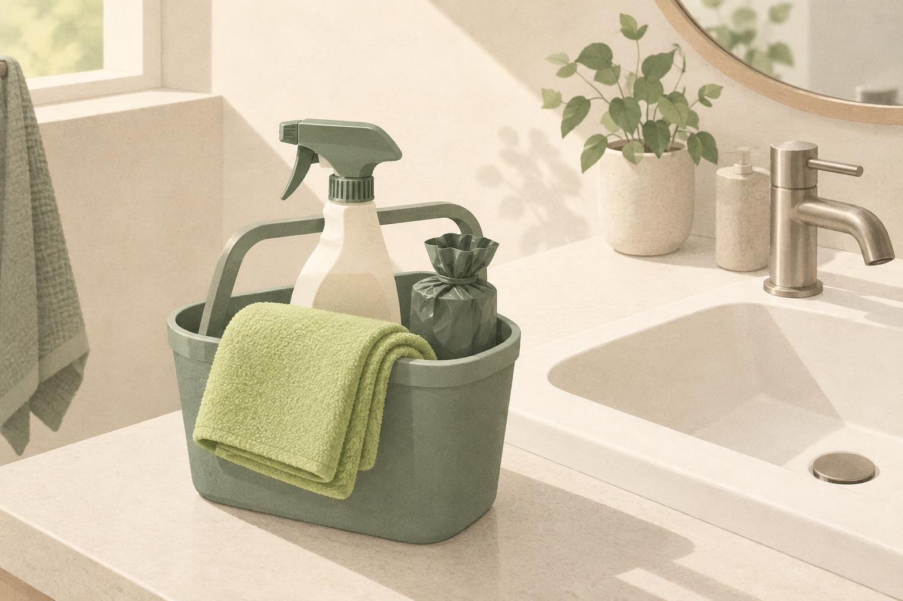
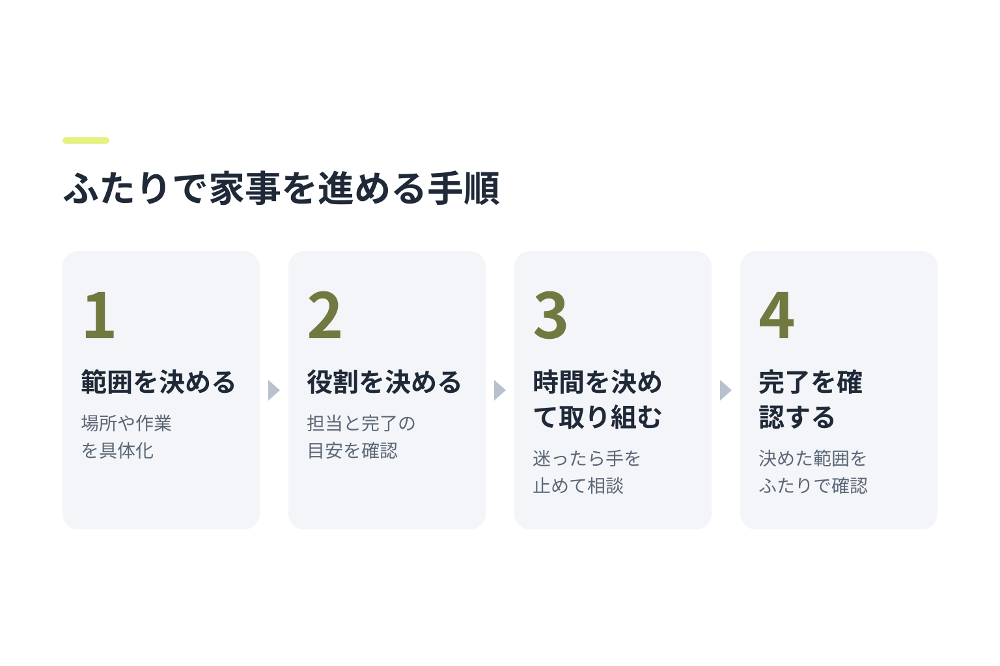
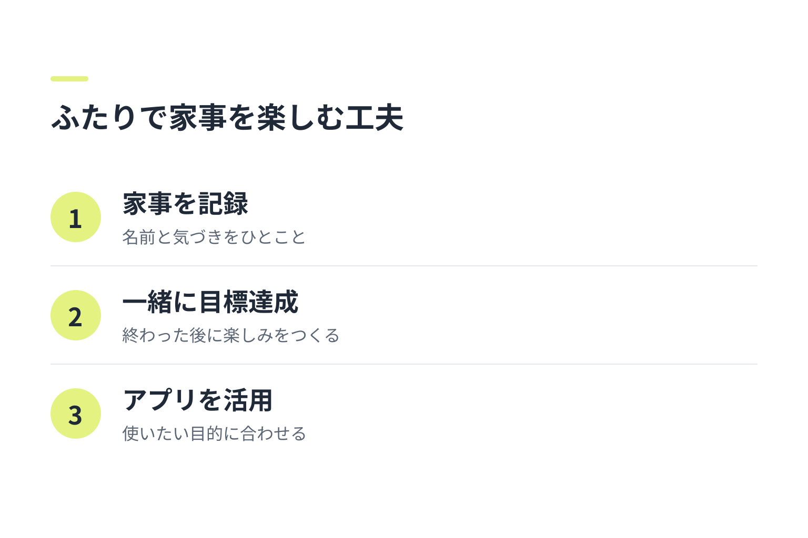

ふたりで家事を始めるなら、まず「一緒にやる時間をつくりたい」のか「家事を分担したい」のかを話してみましょう。この進め方が合うのは、ふたりで相談しながら週末の家事に取り組める場合です。どちらかが疲れているときや、話し合いが負担になりそうなときは、家事をひとつだけ選んだり、別々にできる作業を分けたりする方法もあります。
全体の流れは、目的と時間を確認する→家事と役割を決める→一緒に進めて振り返る、の3段です。最初は週末の20〜30分など短い時間から始められます。つまずきやすいのは、家事の範囲や「終わった」の基準を曖昧にしたまま始めることです。
ふたりで家事を始める前に話し合っておきたいこと
最初に決めるのは、細かな分担よりも「何のために一緒に家事をするのか」です。たとえば、週末の家事を早めに終えて自由時間をつくりたい、ふたりで過ごすきっかけにしたいなど、目的を共有します。目的が違っても、どちらかに合わせる必要はありません。お互いの希望を聞いて、今回の家事で大切にしたいことを決めましょう。
次に、週末に使える時間と、その日の体力を確認します。予定がある日や疲れている日は、無理にいつもの量をこなさなくて大丈夫です。「今日は30分だけ」「洗濯だけ」のように、できる範囲を先に決めておくと、始めるハードルを下げられます。
週末に取り組む家事と準備するものを決める

掃除、洗濯、片づけ、食事の準備などから、ふたりで取り組みやすい家事をひとつ選びます。選ぶときは、かかりそうな時間、必要な道具、終わった状態をイメージできるかを目安にします。初回から家じゅうを整えるような大きな目標にせず、洗面台を掃除する、洗濯物をたたむなど、範囲を絞るのがおすすめです。
始める前に、洗剤や掃除道具、ゴミ袋など必要なものを手の届く場所に用意します。家事の手順に違いがある場合は、「どちらのやり方が正しいか」を決めるより、今回の目的に合う方法を相談しましょう。たとえば「今日は見えるところを整える」と決めれば、細かな仕上がりの違いで話が止まりにくくなります。
ふたりで家事を進める基本の手順

家事の範囲を決める
「部屋を片づける」ではなく、「テーブルの上を片づける」のように、作業の範囲を具体的にします。終わりが見えないと感じたら、場所や時間をさらに小さく区切りましょう。
役割と終わりの目安を決める
同じ作業を一緒にするのか、掃除機をかける人と床の物を片づける人のように分けるのかを決めます。役割を分ける場合は、担当だけでなく、どこまでできたら完了かも確認します。役割は毎回同じでなくて構いません。得意なことやその日の都合に合わせて調整できます。
時間を決めて取り組む
決めた時間になったら始め、途中で迷ったらいったん手を止めて相談します。片方が先に終わった場合は、相手の作業を手伝うか、予定どおりの範囲で終えるかを確認しましょう。相手のやり方をすぐに直すのではなく、気になる点があれば「次はこうしてみる？」と提案すると話しやすくなります。
完了を一緒に確認する
最後に、最初に決めた範囲ができたかをふたりで確認します。目標以上に作業を広げる必要はありません。途中まででも、決めた時間で区切れたなら、今回の取り組みとして振り返れます。
家事の記録やゲーム感覚を取り入れて楽しむ

終わった家事をメモに残したり、完了したことをふたりで共有したりすると、取り組んだ内容を振り返りやすくなります。記録は細かくする必要はありません。「洗濯物をたたんだ」「キッチンを片づけた」など、家事の名前と気づいたことをひとこと書くだけでも十分です。
ゲーム感覚を取り入れるなら、勝ち負けを決めるより、ふたりで目標を達成する形が取り入れやすいでしょう。「タイマーが鳴るまで一緒に片づける」「終わったら好きな飲み物でひと休みする」など、家事のあとに楽しみをつくる方法もあります。競争が負担になる場合は、無理にゲームにしなくて大丈夫です。
「週末家事バトル」のようなアプリを使う場合は、利用できる機能を確認したうえで、家事の記録や達成の共有など、ふたりが使いたい目的に合わせて取り入れましょう。アプリに合わせて家事を増やすのではなく、ふたりに合う範囲で使うことが大切です。
ふたりで家事ができたかを振り返る方法
家事が予定どおり終わったかだけでなく、取り組んでいる間の負担感や楽しさも話してみましょう。次のような問いを使うと、責め合いではなく改善の相談につなげやすくなります。
- 量や時間はちょうどよかった？
- 役割の分け方で困ったことはあった？
- 次回も続けたいこと、変えてみたいことはある？
意見が違ったときは、どちらかのやり方を正解と決めず、次回に試す方法をひとつ選びます。家事の量を減らす、役割を入れ替える、開始時間を変えるなど、小さく調整してみましょう。
ふたりで家事を続けるための応用アイデア
忙しい週末は、家事の量を半分にする、15分だけ取り組むなど、短く区切る方法があります。気分が乗らない日は、必要な家事をひとつだけ選ぶか、ふたりで相談して別の日に回すこともできます。
また、毎週同じ家事をする必要はありません。予定や季節、その日の体力に合わせて内容を変えましょう。続けること自体を目標にして無理をするより、「今週はどこまでなら心地よくできるか」をふたりで決めるほうが、生活に合わせやすくなります。
よくある質問
ふたりで家事を始めるとき、最初に何を決めればよいですか？
一緒に家事をする目的と、週末に使える時間を確認しましょう。そのうえで、最初に取り組む家事をひとつ選び、どこまでできたら完了かを決めます。
ふたりで家事をするとき、役割は毎回固定したほうがよいですか？
固定する必要はありません。得意なことや予定、その日の体力に合わせて変えて大丈夫です。固定する場合も、負担感に偏りがないか、ときどきふたりで確認しましょう。
家事のやり方に違いがあるときは、どうすればよいですか？
まずは今回の目的と完了の目安をすり合わせます。やり方の違いが仕上がりに影響しないなら、互いの方法を尊重するのもひとつです。気になる場合は、次回に試す方法を相談しましょう。
週末に家事を一緒に楽しむには、どんな工夫がありますか？
時間を区切る、終わった後の楽しみを用意する、家事をひとつずつ選ぶなど、負担にならない工夫から試せます。競争が合わないふたりなら、協力して目標を達成する形がおすすめです。
ふたりで家事を続けるために、アプリを使うメリットは何ですか？
利用するアプリの機能によりますが、対応している場合は家事の記録や進み具合の共有に役立つことがあります。機能を確認し、ふたりが使いやすい範囲で取り入れましょう。アプリを使わず、紙やメモで記録する方法でも構いません。
着手チェックリスト
始める前に、次の項目をふたりで確認してみてください。
- 一緒に家事をする目的を共有した
- 週末に使える時間と体力を確認した
- 取り組む家事をひとつ選んだ
- 必要な道具を用意した
- 役割と完了の目安を決めた
- 終わった後に負担感や次回の工夫を話す時間をつくった